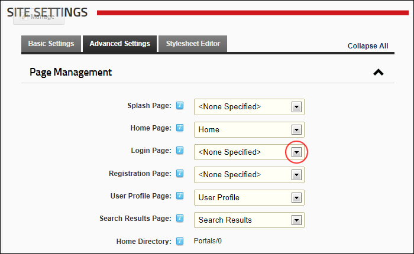

Restoring the Default Login Page
How to restore the default Login page to the site. Skin Token: The Login token must be included in the Site Skin to access the default login page. Don't restore the default Login page if you are using a custom Site Skin that doesn't include this skin object.
- Navigate to Admin >
 Site Settings.
Site Settings.
- Optional. Click on the country flag icon associated with the culture (language) to be updated. This field only displays when multiple languages are enabled. See "Viewing a Site in a Secondary Language"
- Select the Advanced Settings tab.
- Expand the Page Management section.
- At Login Page, select < None Specified >.

-
Click the Update button.